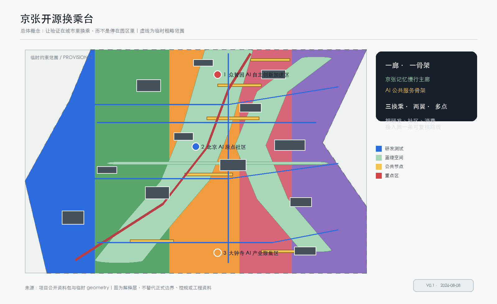
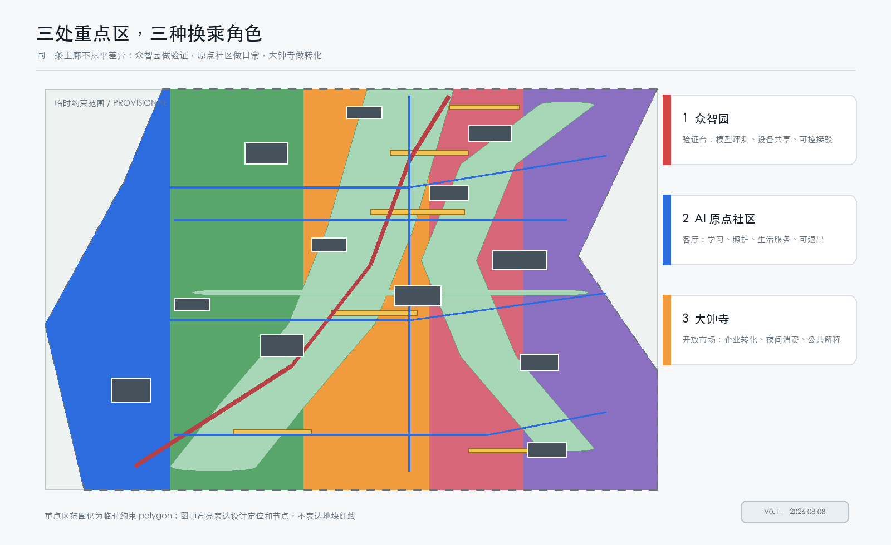
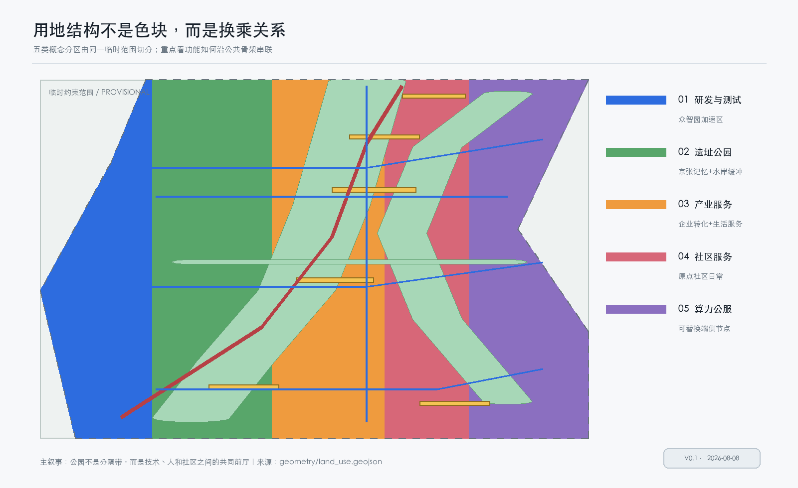
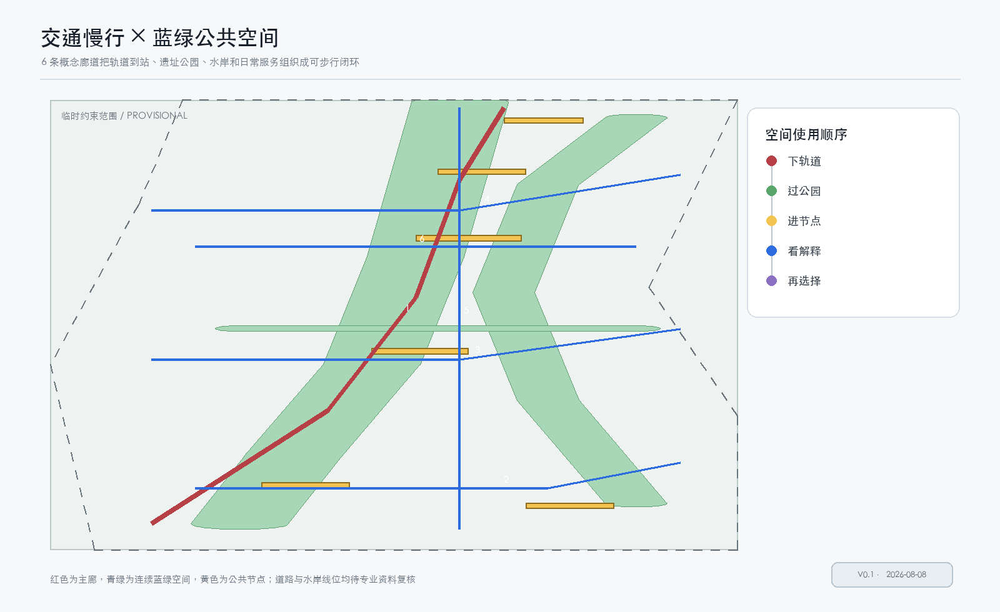

总览地图

核心指标
指标是本轮设计层的可复算值；正式边界替换后需要整体重算。
三层范围
统筹研究范围
约 43.6 km²，研究产业、人才、场景和全球协作。
总体设计范围
约 11.4 km²，组织公共骨架、更新和风貌。
重点区域
约 368.4 ha，三处片区做不同角色的详细深化。
重点区域
众智园 AI 自主创新加速区
以测试接驳线、共创前厅和评测设施形成“验证台”。
北京 AI 原点社区
以开放台、共享绿脊和步行环形成“城市客厅”。
大钟寺 AI 产业聚集区
以转化客厅、夜间客厅和说明台形成“开放市场”。

用地分区

五类分区由同一临时范围切分，表达功能关系，不代替正式控规用地红线。
交通慢行

6 条概念慢行/服务廊道连接轨道到站、公园、水岸和公共节点，具体线位待专业复核。
蓝绿公共空间
京张遗址公园活力带采用“历史线可读、技术线可停、生活线可绕”的三线策略。绿脊不要求所有人参与技术活动，也为普通步行、休息和无障碍使用保留完整路径。
公共验证广场
让模型和服务可围观、可解释、可暂停。
原点开放台
让学习、照护和社区服务先于设备出现。
全球 AI 荣誉墙
记录贡献者、复核结论和公开版本。
建筑与更新项目
建筑图层包含 12 个概念体量，分为保留再利用、首层改造和参考新建服务单元。它们只表达空间供给和服务位置，不表达真实建筑数量、权属、高度或建设规模。更新项目以低工程依赖的公共廊道、导视、前厅和验证节点先行，再由专业团队结合正式资料深化。
AI 场景
公开发布、版本说明、人工答疑。
在可控范围测试交通和服务。
公开数据识别断点，人工复核。
连接学习、运动和生活服务。
展示安全评测和责任边界。
把需求、原型和意见公开对接。
用普通语言说明数据如何使用。
展示端侧算力与能源协同。
把铁路、中关村和 AI 新文化串联。
串联课程、路演、体验和复盘。
任务覆盖
本包覆盖公告 1.3、1.4、1.5 和 agent.1 至 agent.6；命名和 Logo、6 个生态案例、10 张场景卡、4 个产业测试场景、5 类画像、3 处朝圣地标、文化叙事和长期运营均在正文与结构化矩阵中对应。
自检状态
本页与 proposal.md、metrics.json、GeoJSON、五张图和两套 PDF 同步生成；自检文件会在最终化后写入实际结果。正式 polygon 和控规条件补齐后，需要重新生成全部依赖成果。
来源
- 项目公开资料包与公告
- 面向智能体的清权任务书
- 维护者提供的临时范围
- 住建部、自然资源部公开标准快照
假设
- 正式边界、道路红线、权属和控规条件待补齐
- 体量、分期、活动和运营为概念建议
- 公共场景采用最小必要数据和人工复核
JINGZHANG OPEN SWITCHBOARD · 共同参与者：LauDongwei、Wang Yilin · 投稿状态：待评审 · 概念方案不代表批准或已建成项目